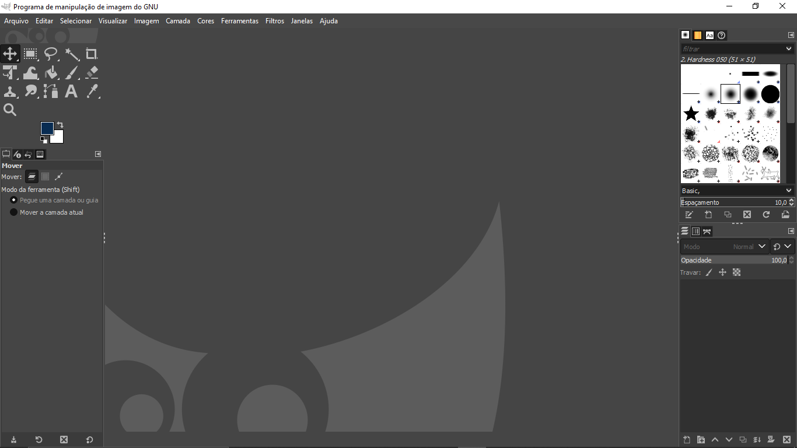
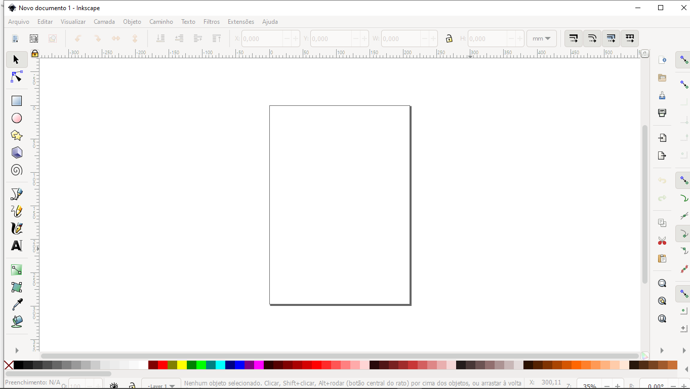

portfolio


Essa imagem representa um projeto realizado pelo nosso grupo,
consistia em uma modficação do software livre chamado Gimp,
para torna-lo mais proximo do photoshop em relaçao as funcionalidades.
 Essa imagem representa outro projeto realizado pelo nosso grupo, uma segunda modificação agora realizada no software livre Inkscape, para polir mais as ferramentas e tornar mais dinamico.